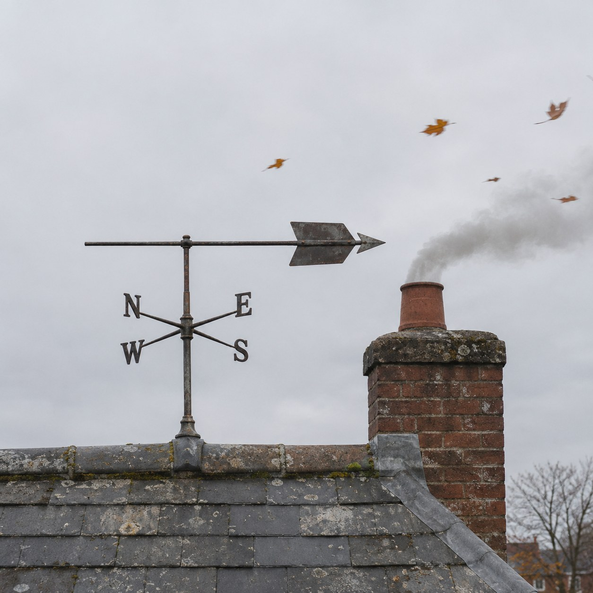
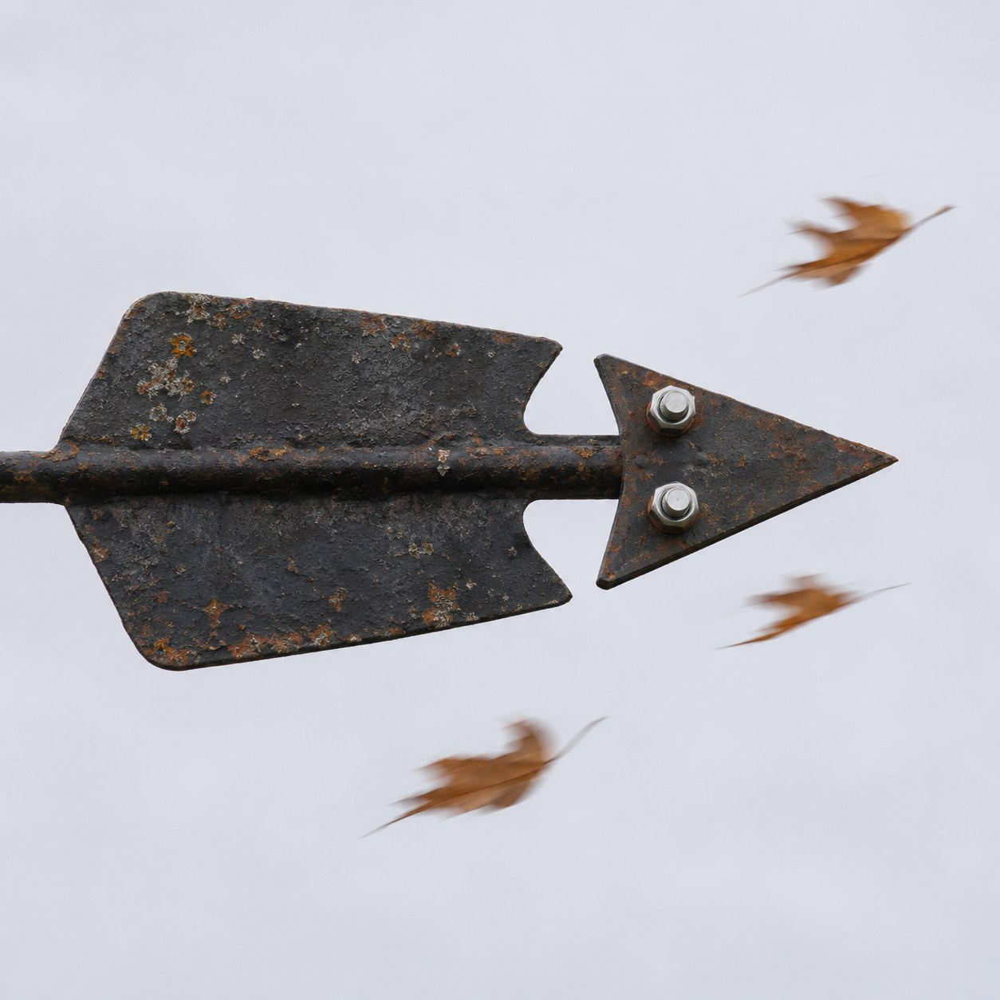

Downwind


A weathervane points into the wind. Its broad tail is pushed away, and its arrow swings round to face the air coming at it. So the arrow on a roof is always aimed somewhere else: at the hills, at the sea, at the place the weather was.
Our words do the same. A north wind is a wind that comes from the north. We name a wind by where it was born, never by where it is going.
This vane has been rebuilt. The arrowhead is now fixed to the tail, so it turns its back to the wind and points the way the air is heading. It agrees with the smoke from the chimney beside it, with the leaves in the gutter, with the coat of whoever walks below. It is the only instrument on the roof facing the same way as the thing it measures.
In 1940 Walter Benjamin wrote about a picture by Paul Klee of an angel. He saw in it the angel of history, its face turned toward the past, watching the wreckage pile up at its feet, while a storm blew it backwards into a future it could not see. Every weathervane stands like that angel. It stares at where things came from and is turned by them.
This one has turned round. It cannot stop the storm, and it knows nothing more than the others do. Any arrow can be read backwards. It has only changed the question the roof is asking, from where from to where to.
It points down the street now, past the bus stop and the last houses, toward the next town, where the weather it is reading has not arrived yet.